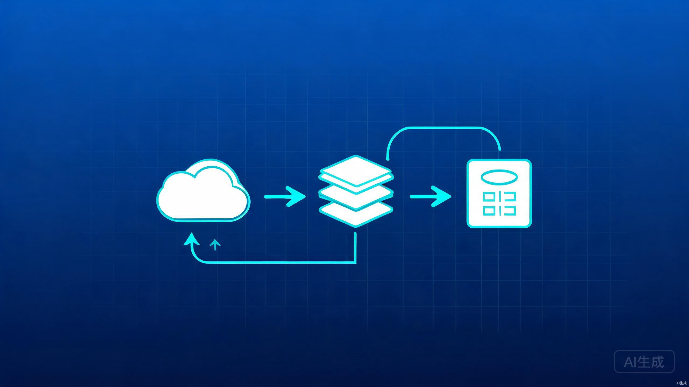

后台文章删除后前台仍显示问题的完整诊断与修复报告
现象：后台管理页面删除文章后，前台首页和文章详情页仍然显示已被删除的文章。
根因：经代码审查确认，存在 三层缓存叠加 导致删除操作无法实时同步到前台：
functions/local-api/articles.ts 未设置 Cache-Control 头src/data/articles.ts 的 _cachedArticles 变量cache: 'no-store'| 缓存层 | 位置 | TTL | 删除后是否失效 | 状态 |
|---|---|---|---|---|
| Cloudflare KV | admin_articles 键 |
持久 | 是（立即写入） | 正常 |
| Cloudflare 边缘缓存 | /local-api/articles 响应 |
未设置（不确定） | 否 | 已修复 |
| 前端内存缓存 | _cachedArticles 模块变量 |
5 分钟 | 否 | 已修复 |
| 浏览器 HTTP 缓存 | fetch 默认行为 | 不确定 | 否 | 已修复 |
| Service Worker / PWA | — | — | N/A | 不存在 |
| localStorage 文章缓存 | — | — | N/A | 不存在 |
| 定时任务 / Cron | — | — | N/A | 不存在 |
| 搜索引擎索引 | 外部（Google/Bing） | 数天~数周 | 需手动提交 | 需关注 |
后台删除逻辑位于 functions/admin/[[path]].ts 第 296-302 行，代码流程为：
admin_articles 完整数组filter(a => a.id !== body.id) 过滤掉目标文章kvSetArticles() 写回 KV（现已同步更新版本号）{ ok: true, removed: N }验证方法：在后台删除文章后，立即在浏览器控制台执行：
// 直接调用公开 API 验证 KV 数据
fetch('/local-api/articles', { cache: 'no-store' })
.then(r => r.json())
.then(d => {
console.log('文章总数:', d.list.length)
console.log('版本号:', d.version)
console.log('是否包含已删除文章:', d.list.some(a => a.id === '被删除的文章ID'))
})如果返回结果中不包含已删除文章，说明 KV 层面数据已正确更新。
Cloudflare KV 写入后存在约 5 秒的最终一致性延迟。即 kv.put() 返回后，不同边缘节点读取到的数据可能仍然是旧值。这是 Cloudflare KV 的已知行为，非 Bug。
影响：删除后 5 秒内的请求可能读到旧数据，这是可接受的短暂窗口。
functions/local-api/articles.ts 的响应只设置了 content-type，没有设置 Cache-Control 头。这意味着 Cloudflare 边缘节点的缓存行为是不确定的——可能缓存，也可能不缓存，取决于 Cloudflare 的默认策略。
对比之下，functions/local-api/[[path]].ts 中的 json() 辅助函数已设置 Cache-Control: no-store，但前端的 fetch('/local-api/articles') 命中的是独立文件端点（Cloudflare Pages 路由优先级：精确匹配 > 通配匹配）。
src/data/articles.ts 第 189-191 行定义了模块级缓存变量：
let _cachedArticles: Article[] | null = null
let _cacheTime = 0
const CACHE_MS = 5 * 60 * 1000 // 5 分钟loadArticles() 在 5 分钟内直接返回 _cachedArticles，不会重新发起网络请求。后台删除文章后，前台的内存缓存完全不知道数据已变更，会继续返回包含已删除文章的旧数据。
关键设计缺陷：后台管理页面调用的是 /admin/articles（管理端点），前台调用的是 /local-api/articles（公开端点），两者使用不同的数据通道，后台的增删改操作不会通知前台缓存失效。
原始代码 fetch('/local-api/articles') 未指定 cache: 'no-store' 选项，浏览器可能根据启发式规则使用磁盘缓存。
经检查 wrangler.toml 配置文件，没有 [triggers] 或 crons 配置，没有任何 Pages Function 使用 scheduled 处理器。因此不存在定时任务导致数据不同步的问题。
前端存在客户端轮询（useDailyTick 每 30 秒检查日期变更），但这仅用于跨午夜刷新访问统计，与文章数据无关。
搜索引擎（Google、Bing、百度）的爬虫索引可能已收录被删除文章的 URL。用户通过搜索引擎点击进入时，会访问到已不存在的文章页面。
处理步骤：
loadArticleBySlug 返回 null 时会显示静态兜底文章，应改为显示"文章不存在"提示）在浏览器中按 Ctrl + Shift + R（Windows）或 Cmd + Shift + R（Mac）进行硬刷新，绕过浏览器缓存。
打开 DevTools（F12）→ Network 标签 → 勾选 Disable cache，然后刷新页面。或通过 Application → Storage → Clear site data。
登录 Cloudflare Dashboard → Caching → Configuration → Purge Everything（或使用 API）：
# 通过 Cloudflare API 清除指定 URL 缓存
curl -X POST "https://api.cloudflare.com/client/v4/zones/{zone_id}/purge_cache" \
-H "Authorization: Bearer {api_token}" \
-H "Content-Type: application/json" \
--data '{"files":["https://yourdomain.com/local-api/articles"]}'在 Cloudflare Dashboard → Pages → 对应项目 → Deployments → Retry deployment，确保最新的 Functions 代码生效。
/local-api/articles 响应头已添加 Cache-Control: no-store，Cloudflare 边缘不再缓存fetch 已添加 { cache: 'no-store' }，浏览器不再使用磁盘缓存articles_version KV 键，增删改时自动更新broadcastArticleCacheInvalidation()，同标签页立即清缓存，跨标签页通过 storage 事件广播记录被删除文章的 id（如 test-article-001）。
// 验证公开 API 是否已不包含被删除文章
const res = await fetch('/local-api/articles', { cache: 'no-store' })
const data = await res.json()
const deleted = data.list.find(a => a.id === 'test-article-001')
console.log('版本号:', data.version)
console.log('已删除文章是否仍存在:', !!deleted) // 应为 false
console.log('文章总数:', data.list.length)打开新标签页访问前台首页，确认已删除的文章不再出现在文章列表中。
直接访问已删除文章的 URL（如 /article/test-article-001），确认不再显示该文章内容。
在标签页 A 打开前台首页 → 在标签页 B 打开后台删除文章 → 回到标签页 A 刷新页面 → 确认已删除文章不再显示。
// 在浏览器控制台执行的完整验证脚本
async function verifySync(articleId) {
console.log('=== 开始数据一致性验证 ===')
// 1. 后台数据
const adminRes = await fetch('/admin/articles', {
headers: { 'Authorization': 'Bearer ' + localStorage.getItem('admin_token') }
})
const adminData = await adminRes.json()
const adminHas = adminData.list.some(a => a.id === articleId)
// 2. 公开 API 数据
const publicRes = await fetch('/local-api/articles', { cache: 'no-store' })
const publicData = await publicRes.json()
const publicHas = publicData.list.some(a => a.id === articleId)
console.log('后台 KV 数据:', adminHas ? '❌ 仍包含' : '✅ 已删除')
console.log('公开 API 数据:', publicHas ? '❌ 仍包含' : '✅ 已删除')
console.log('版本号:', publicData.version)
console.log(adminHas === publicHas ? '✅ 前后台一致' : '⚠️ 前后台不一致（等待 KV 同步）')
}
verifySync('被删除的文章ID')functions/local-api/articles.ts
// 修复前：没有 Cache-Control 头
return new Response(JSON.stringify({ list: articles }), {
headers: { 'content-type': 'application/json' },
})
// 修复后：禁止所有缓存层缓存
const headers = {
'content-type': 'application/json; charset=utf-8',
'Cache-Control': 'no-store, no-cache, must-revalidate',
}
return new Response(JSON.stringify({ list: articles, version }), { headers })functions/admin/[[path]].ts
// 新增 KV 版本号键
const KV_ARTICLES_VERSION = 'articles_version'
// 封装文章写入：数据 + 版本号同步更新
async function kvSetArticles(kv, data) {
await kvSet(kv, KV_ARTICLES, data)
await kvSet(kv, KV_ARTICLES_VERSION, Date.now())
}
// 所有文章增删改操作统一使用 kvSetArticles
// POST (创建) / PUT (更新) / DELETE (删除) / upload (上传) / seed (导入)src/data/articles.ts
// 新增：清除内存缓存
export function invalidateArticleCache() {
_cachedArticles = null
_cacheTime = 0
_cachedVersion = 0
}
// 新增：广播缓存失效到其他标签页
export function broadcastArticleCacheInvalidation() {
invalidateArticleCache()
localStorage.setItem('article-cache-invalidated', String(Date.now()))
}
// 新增：监听跨标签页失效通知
window.addEventListener('storage', (e) => {
if (e.key === 'article-cache-invalidated') invalidateArticleCache()
})
// 修复：fetch 添加 cache: 'no-store'
const res = await fetch('/local-api/articles', { cache: 'no-store' })
// 修复：版本号比对自动失效
const serverVersion = data.version || 0
if (serverVersion && serverVersion !== _cachedVersion) {
_cachedArticles = null // 版本变化，强制刷新
}
// 优化：TTL 从 5 分钟缩短到 30 秒
const CACHE_MS = 30 * 1000src/pages/admin/ArticleManage.tsx
// 在删除、创建、更新、上传操作后调用广播
await adminApi.deleteArticle(deleteId)
broadcastArticleCacheInvalidation() // ← 新增
void load()
await adminApi.createArticle(payload)
broadcastArticleCacheInvalidation() // ← 新增
await adminApi.updateArticle(payload)
broadcastArticleCacheInvalidation() // ← 新增functions/local-api/[[path]].ts
// 修复前：只返回文章列表
return json({ list, source: 'kv' })
// 修复后：并行读取版本号并返回
const [raw, versionRaw] = await Promise.all([
kv?.get('admin_articles'),
kv?.get('articles_version'),
])
const version = versionRaw ? Number(versionRaw) : 0
return json({ list, version, source: 'kv' })server/local-api.cjs
// 新增版本文件路径常量
const ADMIN_ARTICLES_VERSION_FILE = path.join(DATA_DIR, 'admin-articles-version.json')
// GET /articles 返回版本号
let version = 0
try { version = Number(fs.readFileSync(ADMIN_ARTICLES_VERSION_FILE, 'utf-8')) || 0 } catch {}
return send(res, 200, { list, version })
// POST/PUT/DELETE/Upload 后写入版本号
writeJson(ADMIN_ARTICLES_VERSION_FILE, Date.now())在 public/_headers 中添加全局缓存规则，作为代码层 Cache-Control 的兜底保障：
# 公开 API 端点禁止缓存
/local-api/*
Cache-Control: no-store, no-cache, must-revalidate
# 管理端点禁止缓存
/admin/*
Cache-Control: no-store, no-cache, must-revalidate
# 静态资源长期缓存（带文件哈希的 JS/CSS）
/assets/*
Cache-Control: public, max-age=31536000, immutable
# HTML 文件短缓存
/*.html
Cache-Control: public, max-age=0, must-revalidate在 public/robots.txt 中配置：
User-agent: *
Allow: /
Disallow: /admin/
Disallow: /article/
# 已删除的文章 URL 可动态添加到 Disallow
# 或使用 sitemap.xml 仅暴露有效文章
Sitemap: https://yourdomain.com/sitemap.xml当前 loadArticleBySlug() 返回 null 时，前端回退到静态文章。应改为显示"文章不存在"提示：
// 在 ArticleDetail.tsx 中
const article = await loadArticleBySlug(id)
if (!article) {
// 显示 404 提示而非回退静态文章
return <NotFound />
}在管理端点中，删除操作后可使用 Cloudflare Cache API 主动清除指定 URL 的边缘缓存：
// 在 functions/admin/[[path]].ts 删除操作后
if (typeof caches !== 'undefined') {
const cache = await caches.open('articles-cache')
await cache.delete('/local-api/articles')
}| 防护层 | 机制 | 生效条件 |
|---|---|---|
| 第一层：版本号比对 | 每次请求携带 version，前端比对后自动失效缓存 |
30 秒缓存到期后下次请求触发 |
| 第二层：同标签页即时失效 | 后台操作后直接调用 invalidateArticleCache() |
管理操作完成瞬间 |
| 第三层：跨标签页广播 | 通过 localStorage storage 事件通知其他标签页 |
storage 事件触发（毫秒级） |
| 第四层：HTTP 头禁止缓存 | Cache-Control: no-store + cache: 'no-store' |
每次 HTTP 请求 |
| 第五层：短 TTL 兜底 | 内存缓存 30 秒自动过期 | 最坏情况 30 秒后自动刷新 |
/article/{id}）仍存储在 KV 的 comments_data 中。建议在删除文章时同步清理关联评论。JSON.parse 整个数组）会成为性能瓶颈。D1（SQLite）支持按 ID 单条查询和删除，天然避免缓存问题。| 文件路径 | 修改内容 | 影响范围 |
|---|---|---|
functions/local-api/articles.ts |
添加 Cache-Control 头 + 返回版本号 | 线上公开文章 API |
functions/local-api/[[path]].ts |
文章列表端点并行读取版本号 | 通配路由公开 API |
functions/admin/[[path]].ts |
新增 kvSetArticles() 封装 + 版本号写入 | 后台增删改操作 |
src/data/articles.ts |
缓存失效机制 + 版本比对 + TTL 缩短 + cache:no-store | 前端文章数据加载层 |
src/pages/admin/ArticleManage.tsx |
增删改后调用 broadcastArticleCacheInvalidation() | 后台文章管理页面 |
server/local-api.cjs |
本地开发服务器版本号文件同步 | 本地开发环境 |
本方案针对 Cloudflare Pages + KV 架构的博客系统，修复已完成并可直接部署。
生成时间：2026-08-17